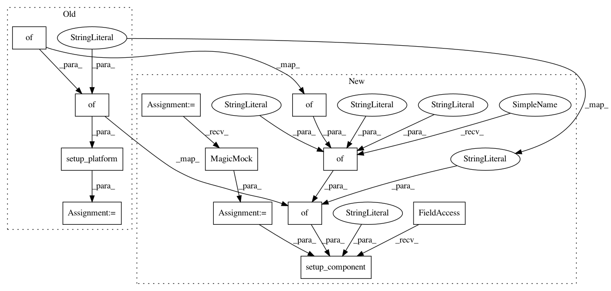

4795122463c8b775f9dcdb6114c66bda0c69c70e,tests/components/binary_sensor/test_template.py,TestBinarySensorTemplate,test_setup_invalid_missing_template,#TestBinarySensorTemplate#,64
Before Change
def test_setup_invalid_missing_template(self):
"Test setup with invalid and missing template.
config = {
"sensors": {
"test": {
"sensor_class": "motion",
},
},
}
result = template.setup_platform(None, config, None)
self.assertFalse(result)
def test_attributes(self):
"Test the attributes.
After Change
def test_setup_invalid_missing_template(self):
"Test setup with invalid and missing template.
hass = mock.MagicMock()
result = bootstrap.setup_component(hass, "sensor", {
"sensor": {
"platform": "template",
"sensors": {
"test": {
"sensor_class": "motion",
},
}
}
})
self.assertFalse(result)
def test_attributes(self):
"Test the attributes.
In pattern: SUPERPATTERN
Frequency: 3
Non-data size: 12
Instances
Project Name: home-assistant/home-assistant
Commit Name: 4795122463c8b775f9dcdb6114c66bda0c69c70e
Time: 2016-08-24
Author: pavoni@users.noreply.github.com
File Name: tests/components/binary_sensor/test_template.py
Class Name: TestBinarySensorTemplate
Method Name: test_setup_invalid_missing_template
Project Name: home-assistant/home-assistant
Commit Name: 4795122463c8b775f9dcdb6114c66bda0c69c70e
Time: 2016-08-24
Author: pavoni@users.noreply.github.com
File Name: tests/components/binary_sensor/test_template.py
Class Name: TestBinarySensorTemplate
Method Name: test_setup_invalid_device
Project Name: home-assistant/home-assistant
Commit Name: 4795122463c8b775f9dcdb6114c66bda0c69c70e
Time: 2016-08-24
Author: pavoni@users.noreply.github.com
File Name: tests/components/binary_sensor/test_template.py
Class Name: TestBinarySensorTemplate
Method Name: test_setup_invalid_sensor_class